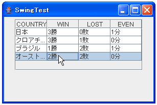

行及び列の選択方法の設定
ここではJTableのセルをクリックした際の選択方法の設定について見ていきます。
JTableではテーブル内のセルをクリックした時に、デフォルトではクリックされたセルを含む行全体が選択状態になります。
上記の状態から他の行にあるセルをクリックすると、前の行は選択解除され、新しくクリックしたセルを含む行全体が選択状態となります。

次に上記のどこかの行が選択状態にある状態で、"Ctrl"キーを押しながら他の行に含まれるセルをクリックします。
上記のように"Ctrl"キーを押しながらクリックしていくと、複数の行を同時に選択状態にすることができます。
次にキーは押さずにどこかのセルをクリックします。
上記の状態で、今度は"Shift"キーを押しながら他のセルをクリックして下さい。
すると、上記のように最初にクリックしたセルを含む行と、"Shift"キーを押しながらクリックしたセルが含まれる行、そしてその間に含まれる行も全て選択状態となります。
これがJTableのデフォルトの選択状態に関する方式です。ただ場合によっては複数行の選択を許可したくない場合もあると思います。このような選択方式の設定を行うには、JTableクラスで用意されている"setSelectionMode"メソッドを使います。
setSelectionMode public void setSelectionMode(int selectionMode)
テーブルの選択モードを設定すると、単一項目選択、連続区間の選択、または連 続区間の複数選択を可能にできます。 注: JTable は、列と行の選択を処理するすべてのメソッドを提供します。 setSelectionMode などの状態を設定する際、JTable は行選択モデルのモードを 更新するだけでなく、columnModel の選択モデルで同様の値を設定します。行お よび列の選択モデルを別々のモードで機能させるには、それらを両方とも直接設 定します。 JTable の行選択モデルと列選択モデルはどちらともデフォルトで DefaultListSelectionModel を使用するので、JTable は JList と同じように動 作します。モードの詳細は、JList の setSelectionMode を参照してください。
上記のメソッドで選択方式を設定できます。引数で指定できる値としては下記の3つとなります。
ListSelectionModel.SINGLE_SELECTION 1 回に 1 つのリストインデックスのみが選択できます。このモードでは、 setSelectionInterval および addSelectionInterval メソッドは同等となり 、2 番目のインデックス引数のみが使用されます。 ListSelectionModel.SINGLE_INTERVAL_SELECTION 連続するインデックス区間を 1 回に 1 つ選択できます。このモードでは、 setSelectionInterval メソッドと addSelectionInterval メソッドは同等で す。 ListSelectionModel.MULTIPLE_INTERVAL_SELECTION このモードでは、選択対象に制限はありません。これがデフォルトです。
デフォルトのままにするには"ListSelectionModel.MULTIPLE_INTERVAL_SELECTION"を引数に設定します。
複数行の選択は許可せず、1回に1つの行しか選択できないようにするには"ListSelectionModel.SINGLE_SELECTION"を設定します。
複数行の選択であっても、連続する区間選択("Shift"キーを押しながらの選択です)だけ許可する場合は、"ListSelectionModel.SINGLE_INTERVAL_SELECTION"を設定します。
では一度試してみます。今回は複数行の選択はできなくしてみましょう。
import javax.swing.*;
import java.awt.event.*;
import java.awt.BorderLayout;
import java.awt.Dimension;
public class SwingTest extends JFrame{
private String[][] tabledata = {
{"日本", "3勝", "0敗", "1分"},
{"クロアチア", "3勝", "1敗", "0分"},
{"ブラジル", "1勝", "2敗", "1分"},
{"オーストラリア", "2勝", "2敗", "0分"}};
private String[] columnNames = {"COUNTRY", "WIN", "LOST", "EVEN"};
public static void main(String[] args){
SwingTest test = new SwingTest("SwingTest");
test.setDefaultCloseOperation(JFrame.EXIT_ON_CLOSE);
test.setVisible(true);
}
SwingTest(String title){
setTitle(title);
setBounds( 10, 10, 300, 200);
JTable table = new JTable(tabledata, columnNames);
table.setSelectionMode(ListSelectionModel.SINGLE_SELECTION);
JScrollPane sp = new JScrollPane(table);
sp.setPreferredSize(new Dimension(250, 100));
JPanel p = new JPanel();
p.add(sp);
getContentPane().add(p, BorderLayout.CENTER);
}
}
試してみて頂くと分かりますが、"Ctrl"キーを押しても"Shift"キーを押しても複数行の選択は行えず、最後にクリックしたセルが含まれる行だけが選択状態となります。
( Written by Tatsuo Ikura )

著者 / TATSUO IKURA
初心者～中級者の方を対象としたプログラミング方法や開発環境の構築の解説を行うサイトの運営を行っています。